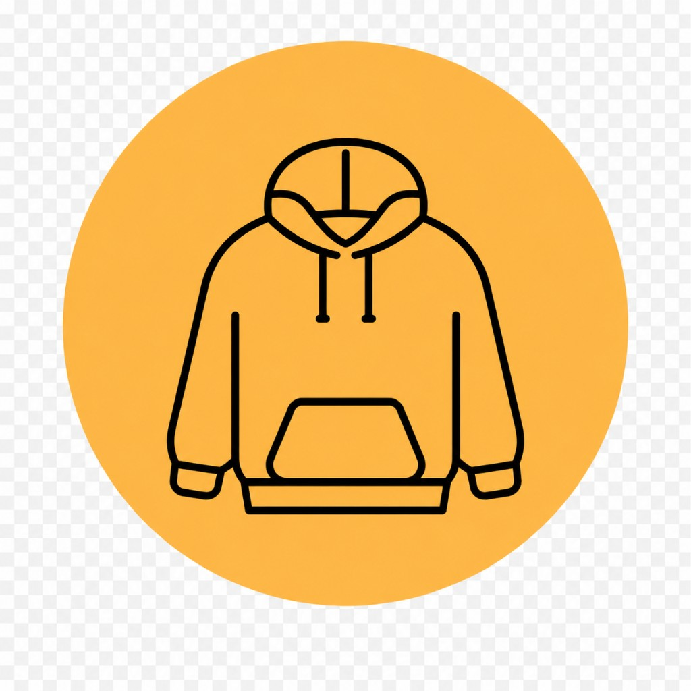

① Browse partner catalogue
Open Street Style from the buttons above—filters and search live there, not on acbuyarchive.com.
Hunt sneakers, blanks, bags, gadgets, or fragrance lanes the same way you would skim a shared sheet.
ACBuy Spreadsheet — Make Every Find Count!
ACBuy Archive (acbuyarchive.com) is an informational companion: we outline spreadsheet-style discovery and link you to a large, filterable partner catalogue on Street Style (Taobao / Weidian / 1688 lanes). Product counts, prices, QC frames, and availability change with sellers—confirm everything on the live listing before you paste links into your shopping agent.
The experience people chase on “finds” sites is the same: dense rows of links, enough photography to compare batches, USD-friendly figures you can gut-check quickly, then a paste into your shopping agent once you trust the SKU page.
Footwear clears out from knits; bags and dongles stop fighting each other—mirroring how spreadsheets are actually read.
Search rails, seasonal chips, brand sliders—anything that keeps you away from brute-force Mandarin keyword hunts at midnight.
Rows surface seller glamour; your shopping agent still owes you truthful warehouse frames before green-lighting outbound freight.
Listings remap overnight—peek live browse anytime a screenshot aged more than a few days.
Stacks of runners, blanks, fleece layers, slings, and kit tops sit beside oddball gadgets or scent picks—all without confronting raw Taobao taxonomy on day zero.
Skim moods first, interrogate QC second, paste into your shopping agent only when measurements and variants still smell honest.
Fresh rows land when sellers revive albums or communities rotate spreadsheets—bookmarking only works if you actually reopen tabs.
ACBuy Archive is informational. We describe spreadsheet culture, steer you toward curated hubs, and flag QC habits you should cultivate. Payments, warehousing, seizure risk, refunds, disputes, freight math, customs entries, and escrow all live inside shopping-agent checkout, partner catalogues, and the origin marketplaces—not on this hostname.
People usually mean a curated link index—often circulated like a spreadsheet—for Taobao, Weidian, and 1688 rows with USD-style figures and QC stills you paste into an agent workflow. acbuyarchive.com explains that habit and links out to partner browse; it does not host the live product grid or take payments.
Yes. Marketplaces like Taobao, Weidian, and 1688 are set up for domestic buyers. A shopping agent handles payment, warehouse QC, consolidation, and international shipping on your behalf.
No storefront sits on acbuyarchive.com—partner catalogues surface rows while your shopping agent and marketplaces manage checkout and fulfillment.
Community shorthand decays weekly. Verification means repeating sizing, QC, link, and weight checks whenever money moves.
Yes—the catalogues we link emphasize UI filters. Hobby servers remain optional garnish, not prerequisites.
Columns rank intent; your agent’s calculators plus duties, insurance, DIM divisors, and FX finish the full landed-cost picture.




Use the tiles below to open Street Style lanes—the linked partner catalogue is where batch hunts actually happen.
An ACBuy Spreadsheet, in practice, is spreadsheet-style discovery: rows of marketplace links—sometimes shared as actual sheets or tables—that bundle USD-ish pricing cues and QC stills before you paste into an agent workflow.
The browse grid itself lives with our linked partner catalogue on Street Style (not on acbuyarchive.com). Filters and listings rotate as sellers update albums; treat anything here as routing plus literacy, not a guarantee.
A typical sheet-style workflow usually surfaces:
Communities curate many of these lists around streetwear, tech odds-and-ends, or seasonal hype—always refresh links before money moves.
Jump into partner browse when you want fewer manual Mandarin hunts; paste only after sizing, QC, and stock still feel honest.
The linked partner catalogue mirrors how shoppers skim spreadsheets—filters and chips cluster sneakers away from dongles without guessing storefront taxonomy cold.
Community shorthand plus structured lanes speeds comparing batches until your agent confirms weights, lines, and duties.
Static explainers on this hostname keep agent vocabulary honest while the live merchandise lives elsewhere.
Buying after spreadsheet-style browse still means agents handle carts—use partner listings for discovery, then paste into whichever checkout you trust.
Follow these steps to get started:
Open Street Style from the buttons above—filters and search live there, not on acbuyarchive.com.
Hunt sneakers, blanks, bags, gadgets, or fragrance lanes the same way you would skim a shared sheet.
Inside partner browse, open multiple listings before you commit domestic yuan:
No batch nickname survives drama forever—repeat checks whenever money moves.
Partner listings bundle photography from sellers or communities:
If frames disagree with listings, negotiate before approving outbound freight.
Grab the Taobao / Weidian / 1688 URL straight from partner browse.
Keep messy tabs labeled—you’ll paste into your agent dashboard next.
Submit through whichever shopping-agent checkout you chose.
The agent should coordinate:
Once parcels hit storage:
Export timelines tighten fast—don’t green-light blindly.
Airwaybill pings stall mid-route often—agents publish realistic SLAs.
Transit ranges swing wildly by line (often roughly one–three weeks once dispatched but confirm yours).
Note: Checkout always sits with your shopping agent plus marketplaces—ACBuy Archive never custody payments or parcels.
Open partner browse for spreadsheet-style lanes across Taobao, 1688, and Weidian—availability and pricing refresh continuously.
Street Style mirrors how shoppers skim curated sheets—filters and chips cluster footwear, fleece layers, bags, and gadgets without mastering storefront taxonomy solo. Compare batches there, paste URLs into your agent, then rely on warehouse QC plus freight math from whoever runs checkout.
This website does not sell products or handle payments. All purchases are made through third-party platforms via a shopping agent, and users are responsible for their own decisions.